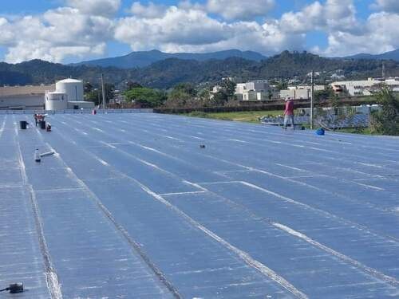
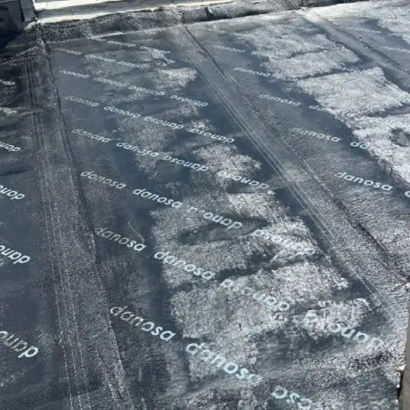
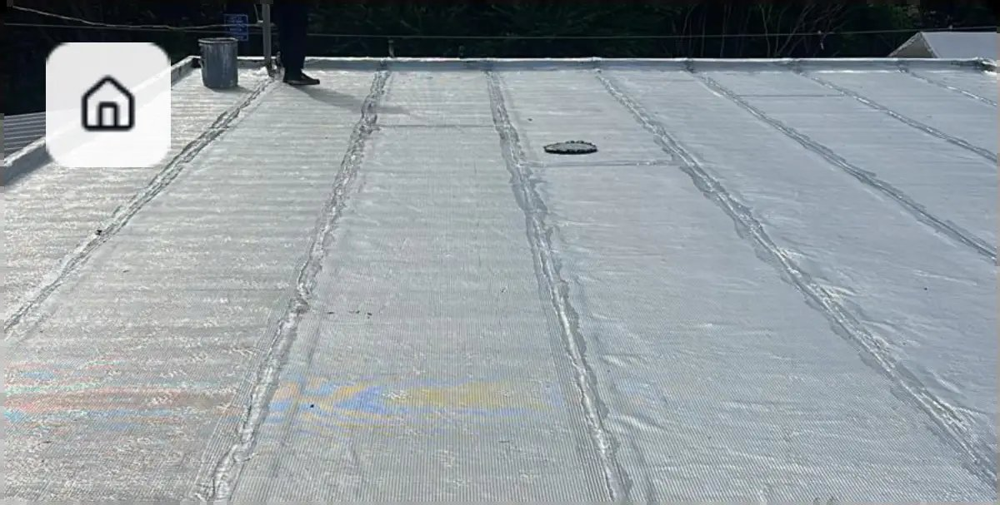
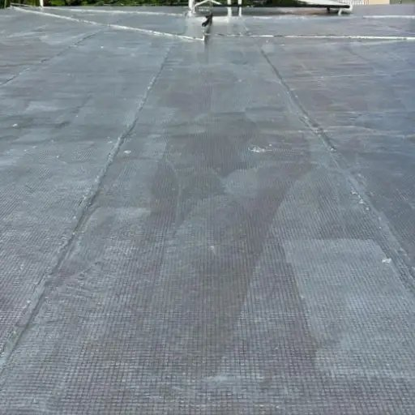
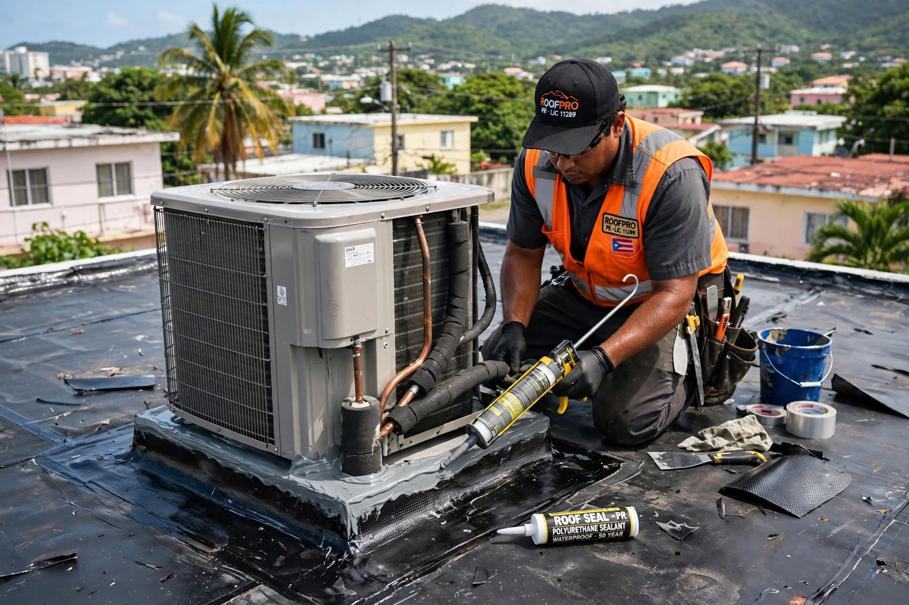
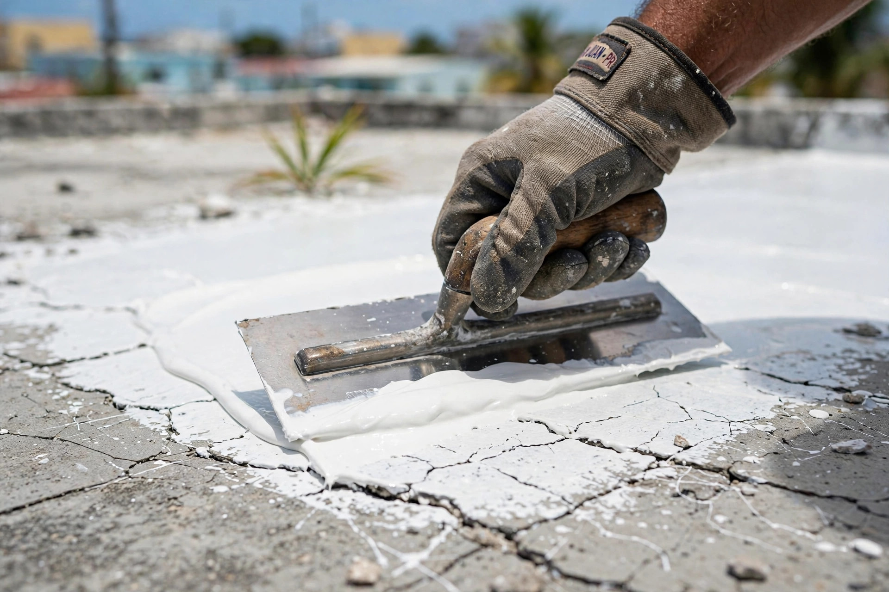
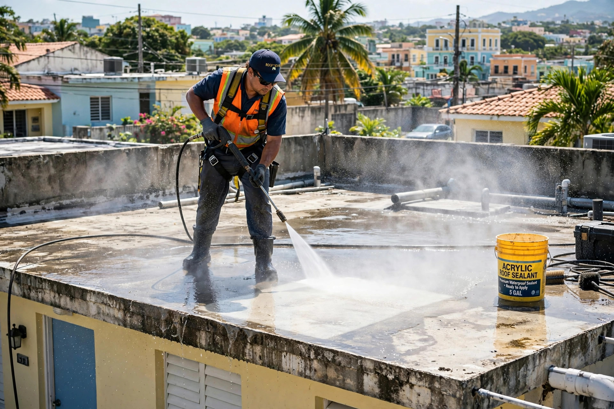
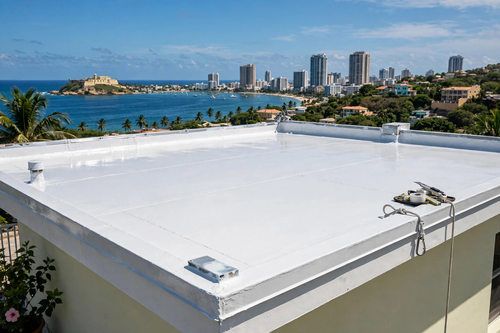

San Juan y área metro · San Juan
Especialistas en sellado de techos en San Juan. Reparamos filtraciones, lavamos a presión y sellamos con garantía por escrito de 10 años. Tu techo seco, tu casa tranquila.
Resultados reales
Cada foto es un trabajo real en techos. Desliza la cinta y toca cualquier foto para verla grande.








← desliza para ver los trabajos →
Lo que hacemos
Del diagnóstico al sellado final: un solo equipo responsable de que tu techo quede seco.
Techos de casas sellados a fondo: preparación, corrección de grietas y membrana completa con garantía.
ResidencialSistemas de sellado para locales y edificios con acabado uniforme y garantía por escrito.
ComercialLocalizamos el punto exacto de entrada del agua y lo corregimos de raíz, no con parchos.
FiltracionesLimpieza profunda del techo antes de sellar: el sellador pega donde debe pegar.
PreparaciónRevisión periódica para que tu sellado cumpla sus 10 años completos sin sorpresas.
MantenimientoVamos a tu casa en San Juan, evaluamos el techo y te damos el plan claro, sin compromiso.
CotizaciónAsí de fácil
Escríbenos por WhatsApp con fotos de tu techo y tu pueblo.
Vamos a San Juan, inspeccionamos grietas, empozamientos y filtraciones.
Lavado a presión, corrección y sellado completo con materiales de calidad.
Te entregamos la garantía por escrito de 10 años. Techo seco, mente tranquila.
Quiénes somos
Julio Roofing Corporation es sellado de techos de verdad en San Juan, Puerto Rico. No vendemos parchos: preparamos el techo, corregimos el problema y sellamos con garantía de 10 años por escrito.
Residencial y comercial. Si tu techo filtra, lo arreglamos de raíz.
Preguntas frecuentes
Cubre el sistema de sellado aplicado: si el techo filtra por falla del sellado dentro de los 10 años, volvemos y lo corregimos. Te la entregamos por escrito al terminar el trabajo.
Sí, primero localizamos el punto de entrada del agua, lo reparamos y luego sellamos el techo completo para que no vuelva a pasar.
Una casa típica toma de 1 a 3 días según el tamaño y el estado del techo. Te damos el tiempo exacto en la visita.
Sellamos ambos. Cada material lleva su preparación y su sistema de sellado correcto.
No. La visita y la cotización en San Juan y área metro son gratis y sin compromiso.
Sí. El acabado reflectivo baja la temperatura del techo y ayuda a que la casa se sienta más fresca.
Escríbenos por WhatsApp y cotiza el sellado de tu techo hoy mismo.
Cotiza tu sellado
Área de servicio
San Juan y área metro
Sellado de techos
Residencial y comercial
Llena esto y te abrimos WhatsApp con tu mensaje listo.
Cotización sin compromiso: dinos tu pueblo y el estado de tu techo, y te orientamos con el mejor plan.
Esta página la creó ManuPro. Escríbenos hoy mismo y cotiza la website profesional de tu negocio.
Cotizar por WhatsApp